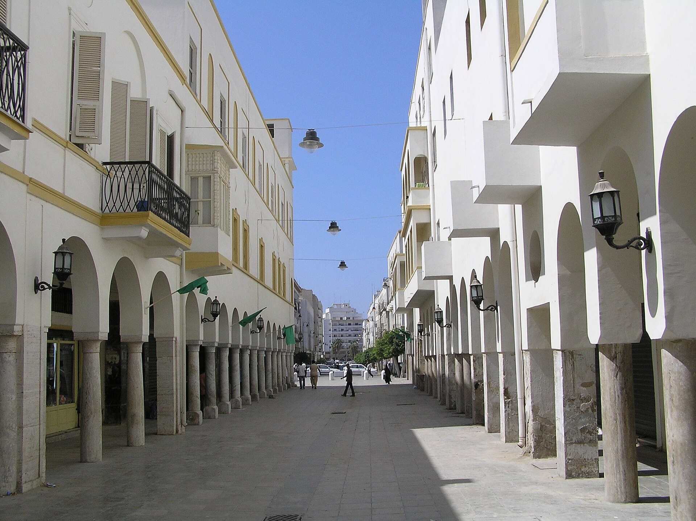

Удар по жилому дому в городе Газа: погибли не менее пяти палестинцев
Палестинские органы здравоохранения и гражданской обороны сообщают, что израильский удар ранним утром субботы по жилому зданию в городе Газа убил не менее пяти человек, четверо из которых — женщины; перемирие держится лишь на бумаге.

По данным палестинских органов здравоохранения и гражданской обороны, израильский авиаудар по жилому зданию в городе Газа ранним утром 3 октября 2026 года убил не менее пяти палестинцев, четверо из которых — женщины. Сообщение распространили Reuters и Al-Monitor.
Другие удары в тот день
Associated Press (через Arab News) сообщило, что другие удары в городе Газа и центральной части сектора в тот день убили ещё троих. Израильские военные не дали немедленных комментариев Al-Monitor; AP сообщило, что военные подтвердили удары, заявив, что бьют по «боевикам», не вдаваясь в подробности. Были ли погибшие мирными жителями или боевиками, независимо не подтверждено.
Цифры
По данным Reuters/Al-Monitor, с момента перемирия в октябре 2025 года от израильского огня погибли не менее ~1 400 палестинцев; за тот же период боевиками были убиты четверо израильских военнослужащих. С начала наступления, по сообщениям, погибли более 74 000 палестинцев.
Статус перемирия
Перемирие при посредничестве США (октябрь 2025 года) номинально действует, но нарушено — держится на бумаге, тогда как израильские удары продолжаются. Переговоры следующего этапа о разоружении ХАМАС и выводе израильских войск зашли в тупик.
Фуад ан-Наджар, потерявший родных при ударе в городе Газа, сказал: «Сегодня по сути худший день в моей жизни. Я потерял сегодня мать и бабушку» (Reuters/Al-Monitor, 3 октября).